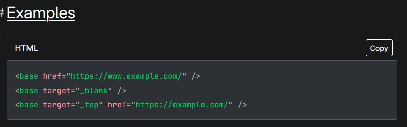
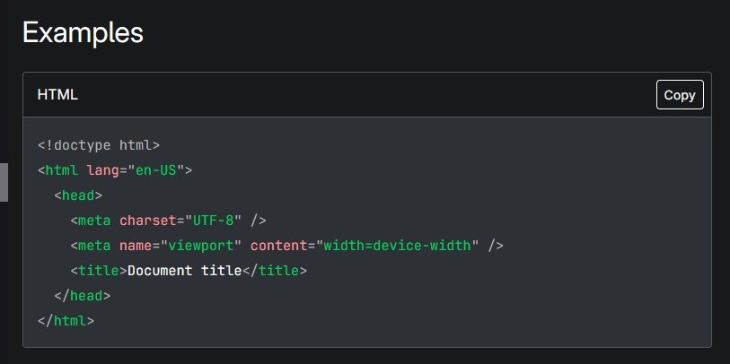
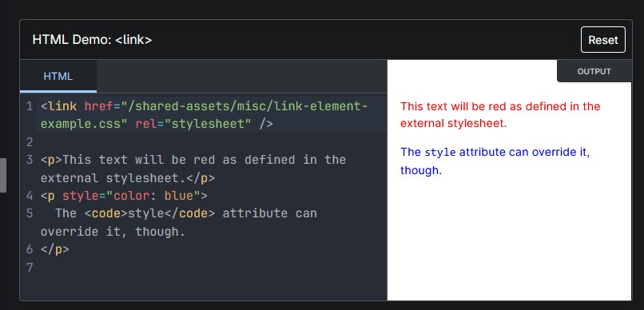
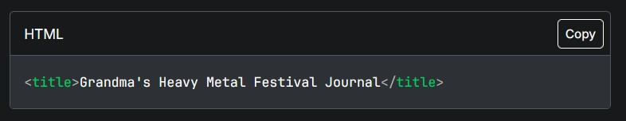

<html>
Rappresenta la radice (elemento di primo livello) di un documento HTML,
quindi viene
anche chiamato elemento radice. Tutti gli altri elementi devono essere discendenti di questo elemento.
I metadati contengono informazioni sulla pagina. Tra queste, informazioni su stili, script e dati che aiutano i software (motori di ricerca, browser, ecc.) a utilizzare e visualizzare la pagina. I metadati per stili e script possono essere definiti nella pagina o collegati a un altro file contenente tali informazioni.
Specifica l'URL di base da utilizzare per tutti gli URL relativi in un documento, permettendo così di ridurre la lunghezza dei collegamenti a risorse come immagini o link ad altre pagine. Può esserci un solo elemento di questo tipo in un documento. Si posiziona all'interno della sezione <head> di una pagina HTML e viene utilizzato principalmente quando si hanno molte risorse con URL lunghi o complessi all'interno di un sito web.
Contiene informazioni leggibili dalla macchina (metadati) sul documento, come il suo "title", "scripts" e "style sheets"
Specifica le relazioni tra il documento corrente e una risorsa esterna. Questo elemento è comunemente utilizzato per collegarsi a CSS, ma viene utilizzato anche per definire le icone del sito (sia icone in stile "favicon" che icone per la schermata iniziale e le app sui dispositivi mobili), tra le altre cose.
Rappresenta i metadati che non possono essere rappresentati da altri elementi HTML correlati ai metadati,
come <base>, <link>, <script>, <style> o <title>.
I metadati sono
informazioni che descrivono il
contenuto di un documento, come il suo autore, la descrizione, le parole chiave e altre informazioni
utili per i motori di ricerca e i browser web.
I meta tag sono elementi HTML invisibili all'utente che forniscono metadati (dati sui dati) su una
pagina web, rendendo le informazioni disponibili ai motori di ricerca e ad altri sistemi automatici come
i browser.
I meta tag sono etichette in codice HTML che forniscono metadati a motori di ricerca e browser,
informandoli sul contenuto di una pagina web o istruendoli su come indicizzarla o visualizzarla. Non
sono visibili all'utente nella pagina, ma sono fondamentali per la SEO (Search Engine Optimization) e
migliorano l'esperienza utente, in particolare la visibilità e il comportamento sui dispositivi
mobili.
Contiene informazioni di stile per un documento o parte di un documento. Contiene CSS, che viene
applicato al contenuto del documento che contiene questo elemento.
Il termine "tag style" si riferisce a due concetti principali in HTML e CSS: il tag "style" per
definire regole CSS all'interno di un documento HTML e l'attributo "style" per applicare stili CSS
direttamente a un singolo elemento HTML.
Il tag "style" va inserito nella sezione "head" e serve per definire stili globali o specifici per
la pagina, mentre l'attributo "style" viene usato per lo stile "inline" su elementi singoli.
Guarda l'esempio
Definisce il titolo del documento che viene visualizzato nella barra del titolo del browser o nella scheda di una pagina. Contiene solo testo; anche gli eventuali tag HTML all'interno dell'elemento vengono trattati come testo normale.
<body>
Rappresenta il contenuto di un documento HTML. In un documento può essere
presente un solo elemento di questo.